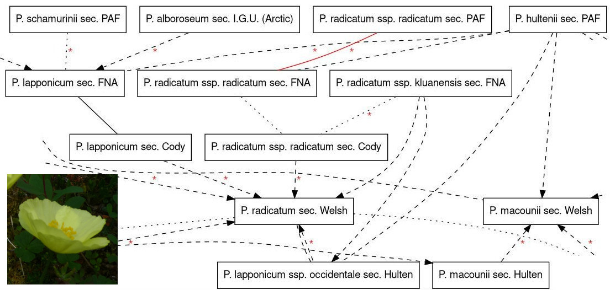

Arctos Webinar Notes
Posted by Cam on 2021-11-09
(Cam’s part of a Webinar about Arctos, with Steffi and Steph)
Short URL to here: is.gd/alawebinar
1. Taxonomic Concepts in Arctos
During taxonomic revisionary work often a name is preserved, but its meaning - that is its circumscription or taxonomic concept - changes, making data integration by name alone inaccurate. This is a perennial problem in biology. One solution is to record the particular taxonomic usage of a name, referencing Name plus publication whenever a scientific name is used. The terms sensu or sec. are often used for this.
Aligning (or “mapping”) related taxonomic concepts then provides taxonomy users with a guide for better understanding the meaning of names. For instance, one author may use a taxonomic concept that is broader than the concept used by another author - that is the first author’s circumscription contains more specimens than the second author. We’d then say that the former concept ‘includes’ the latter. Other terms for possible concept relationships are ‘overlap’, ‘be congruent with’ or even ‘be disjunct with’.
Over the last year, we’ve been aligning taxonomic concepts in five key resources for the Alaskan flora: Hultén’s Flora, Welsh’s Flora, Cody’s Flora of the Yukon, the Flora of North America and the Panarctic Flora. This work was mainly done by Kimberly Cook. Part of the taxonomic alignment map for Papaver:

Kimberly entered data in a web-app we made (tcm), and the app allows us to view relationships graphically.
I will demonstrate how to incorporate taxonomic concepts and taxonomic concept alignments into Arctos, using examples from this map of Papaver:
Add taxonomic concept
Papaver lapponicum subsp. occidentale (Lundstr.) Knaben sec. Hultén 1968to determination of UAM:Herb:244428Add new concept
sec. PAF 2011for Papaver hultenii KnabenAdd concept relationship:
Papaver hultenii Knaben sec. PAF 2011overlapsPapaver lapponicum subsp. occidentale (Lundstr.) Knaben sec. Hultén 1968according toCook 2021.
For more information, please see How To Manage Taxon Concepts in Arctos in the Handbook.
2. The Arctos API
Data in Arctos can be used for research projects, or integrated into other downstream digital resources (such as our new Flora of Alaska). Other than accessing the data via the main search interface (and the SQL interface), one can use the public API (Application Programming Interface). The API can either be queried ‘live’ by an external program requesting information from Arctos, or can be used to pre-download data for caching in another program.
The endpoint and method for searching specimens is: https://arctos.database.museum/component/api/v1/catalog.cfc?method=getCatalogData&.... Information about the endpoint can be seen here, without an API key: https://arctos.database.museum/component/api/v1/catalog.cfc?method=about
To form the HTTP GET request (that you can paste into a Browser URL bar):
- API key:
api_key=... - Search keys, e.g.:
genus=Papaver&species=hultenii - Extra columns to be displayed, e.g.:
cols=partdetail,family - (Page size and page number)
The result is in JSON. This will usually require some manipulation to be converted to CSV, etc.
See The Arctos API in the Handbook.
A more efficient way to get large data downloads from Arctos is via the GBIF IPT dumps from Vertnet. However, only a selected number of (mainly Darwin Core) fields are in each record (94).
Note. Before using API output and data dumps, check the Data Use License. Arctos ALA data is shared using CC BY-NC 4.0. Attribution must be made.
I will demonstrate how Arctos and iNat data, accessed via APIs, can be ‘mashed up’ in a new tool.